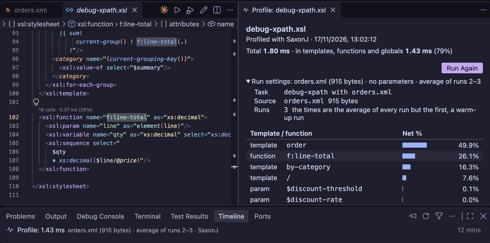

Debugging and Profiling XSLT
When a transformation gives the wrong result, the question is always the same: what did the stylesheet actually do with this input? XSLT is declarative, so the answer isn't a line of code that ran first - it is which templates matched, what the variables held, and what each XPath expression returned. Debugging XSLT means being able to see those things.

A step-through debugger
The extension's debugger runs a stylesheet with Saxon and stops at breakpoints you set in it. It shows the variables in scope, the context item with its position and size, and the call stack of templates and functions. You can step into, over and out of code - including inside a multi-line XPath expression - and step back or reverse-continue to see how you got there. Breakpoints can be conditional or use hit counts, and logpoints write values without stopping.
The values you want are easy to ask for: add an XPath expression to the Watch view or evaluate one in the Debug Console, and see the result as nodes, not just text. The output a stylesheet writes is mapped back to the XSLT that wrote it.
Print debugging
Sometimes the quickest tool is a message. The extension completes xsl:message instructions
that write the variables in scope in color, and has functions for tracing a value inside an expression
without changing its result.

Profiling: finding the slow template
If a stylesheet is correct but slow, profile it. The profiler runs the stylesheet with Saxon timing each template, function and global variable, and shows them in a view, slowest first, with the time spent in each, how often it was called, and its share of the total. Click a row to go to the code, and the times are shown above each declaration in the editor. Profiling needs Saxon-PE or Saxon-EE.

Debugging tests and Schematron
The same debugger works for XSpec tests and for Schematron rules and assertions, so a failing test or a failed assertion leads straight to the code that caused it.
The details are in the user guide: the debugger, print debugging and the profiler.
Common questions
Can you debug XSLT in VS Code?
Yes. The XSLT/XPath extension provides a step-through debugger for XSLT, XSpec tests and Schematron, with breakpoints, stepping through multi-line XPath, step back, watch expressions and output mapped to the XSLT.
How do I find slow templates in XSLT?
Profile the stylesheet. The profiler lists each template, function and global variable with its time, call count and share of the total. It needs Saxon-PE or Saxon-EE.
How do I print a variable's value in XSLT?
Use xsl:message - the extension offers completions that write the variables in scope - or
the tracing functions, which show a value inside an expression without changing the result.
Get the extension. Install XSLT/XPath for Visual Studio Code from the Marketplace.